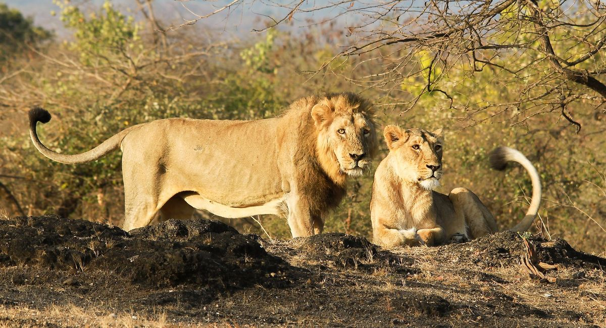

Domestic dogs are mostly kept as pets, though many breeds are capable of surviving on their own,whether it's in a forest or on city streets.

Domestic cats are characteriszed by supple low -slung bodies.firely molded heads. long tails that aid in balance. and specialised teeth and clawstaht adapt them admirable to a life of active hunting.

Sheep or domestic sheep(ovis aries) are domesticated,ruminant mammals typicaly keep as livestock

Wild Animals
The lion is are mammals ,birds,fish or other creature of a wild nature endowed with sensation and the power of voluntary motion Example of wild animals are:
- lion
- Hyena
- Elephant
- Zebra
- lions
- hyena
The lion is a large cat of the genius parther.it has a mascular. broad-chested body.shot rounded head.round ears and ahairy full all the end of its tail
There are three Hyena speecies-spotted brown and stirped hyenas are the largest of the three They are fairly large in build and have reletively short torses with lower hidquties and slooping backs .They have excellent night time vision and Hearing Hyenas have long forelegs and powerful